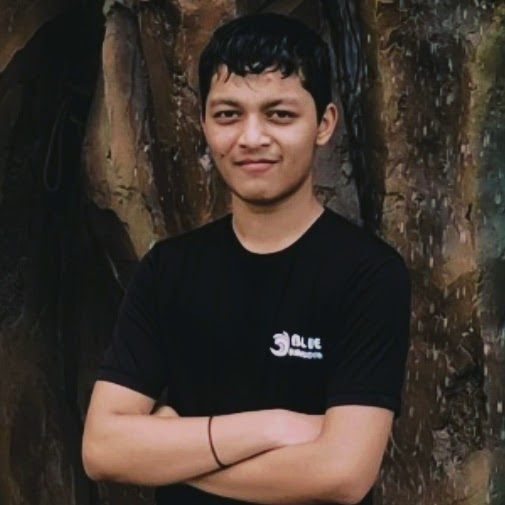

My Resume
Kshitij Kotecha

Summary
My name is Kshitij Yash Kotecha. I am a 17-year-old, soon-to-be 18, starting my first year of B.Tech in CSE at MIT ADT.
Passionate about technology and computer science, I'm excited to explore new opportunities and challenges.
With a drive for excellence, I look forward to making the most of my college journey.
Education
- I completed my schooling till 10th grade at North Point School, Dhule, following the ICSE curriculum.
- For 11th and 12th grade, I transitioned to Mayur College under the State Board.
- My diverse educational background has provided me with a well-rounded foundation for further academic pursuits.
Work Experiance
*As a recent high school graduate, I have no work experience.*
Certificates and Important Document
10th Marksheet - Click here to view
11th Marksheet - Click here to view
Other